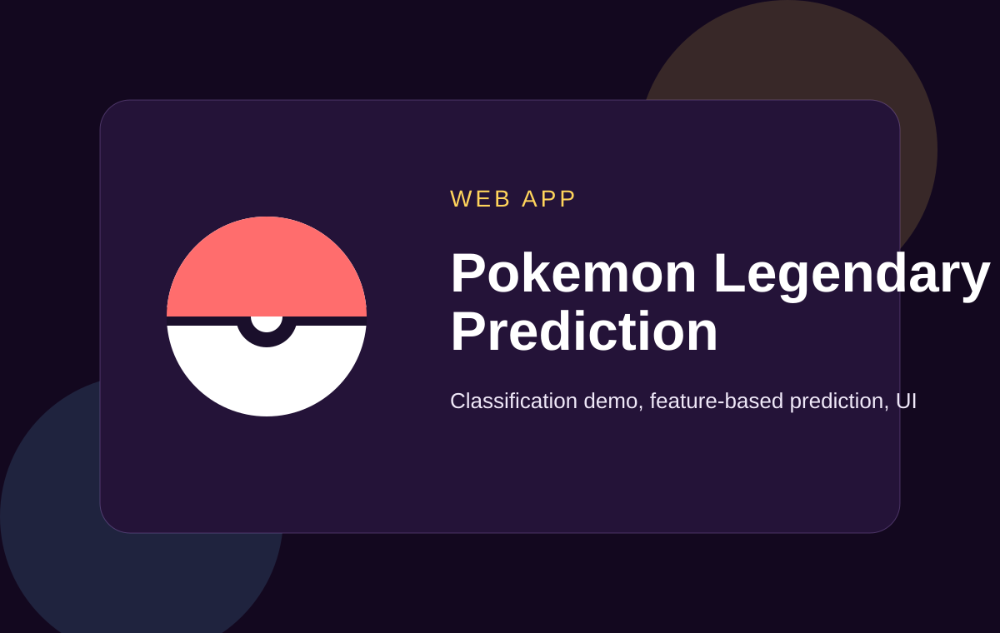

AI Agent
AI Email Auto-Responder Agent
Reads, classifies, and drafts contextual replies for inbox workflows.
Each featured project now has its own page with a cleaner layout, project summary, delivery role, stack, outcomes, and repository link.
Reads, classifies, and drafts contextual replies for inbox workflows.

Support workflow design for faster and more structured client responses.

Image-to-text extraction for document processing and data preparation.

CNN-based image classification project for traffic sign recognition tasks.

Machine learning web app for attrition-focused HR analysis.

Feature-based prediction web app for machine learning demonstration.

Applied machine learning web app for agriculture-focused prediction.

Video-based detection and counting workflow using OpenCV methods.

Facial landmark and image-processing experiment for swap workflows.